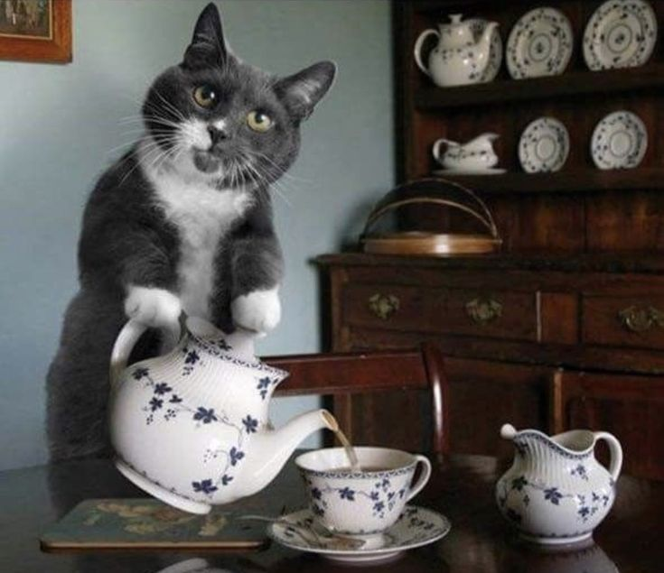

ERROR 418 / I'M A TEAPOT
418.
I'm a teapot.

このページはコーヒーを淹れるようには設計されていません。
そして、ソースコードを眺めても紅茶は出てきません。
「つまり、勝手にコードを見ないでほしいってことです。」
← おとなしくトップページへ戻る
このページはコーヒーを淹れるようには設計されていません。
そして、ソースコードを眺めても紅茶は出てきません。
「つまり、勝手にコードを見ないでほしいってことです。」
← おとなしくトップページへ戻る